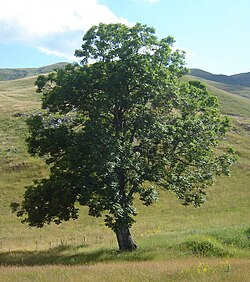
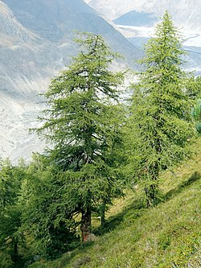

Trees are plants
In botany, a tree is a perennial plant with an elongated stem, or trunk, usually supporting branches and leaves. In some usages, the definition of a tree may be narrower, e.g., including only woody plants with secondary growth, only plants that are usable as lumber, or only plants above a specified height. Wider definitions include taller palms, tree ferns, bananas, and bamboos.
Trees are not a monophyletic taxonomic group but consist of a wide variety of plant species that have independently evolved a trunk and branches as a way to tower above other plants to compete for sunlight. The majority of tree species are angiosperms or hardwoods; of the rest, many are gymnosperms or softwoods. Trees tend to be long-lived, some trees reaching several thousand years old. The earliest trees evolved around 400 million years ago, and it is estimated that there are around three trillion mature trees in the world currently.